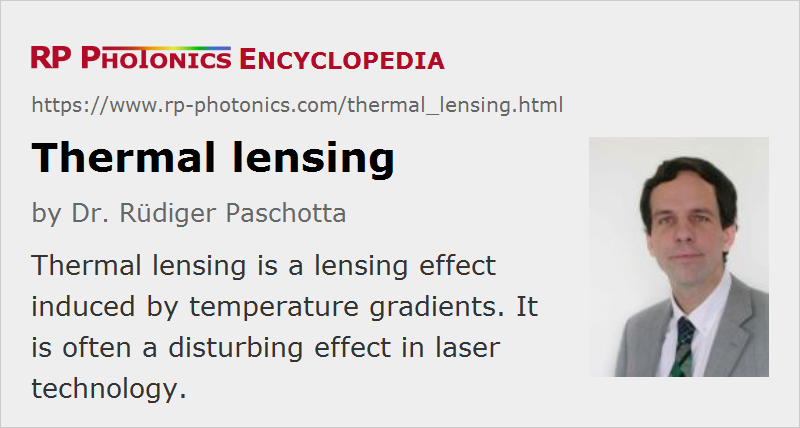

Thermal Lensing
Definition: a lensing effect induced by temperature gradients
German: thermische Linseneffekte
Categories: lasers, physical foundations
How to cite the article; suggest additional literature
Author: Dr. Rüdiger Paschotta
Particularly in high-power lasers, the heating of the gain medium (e.g. a laser crystal) often causes a significant thermal lens through the following mechanisms:
- The gain medium is hotter on the beam axis, compared with the outer regions, typically causing some transverse gradient of the refractive index (thermooptic effect, quantified with the coefficient dn / dT).
- Further index changes can be caused by thermally induced mechanical stress (photoelastic effect, quantified with photoelastic coefficients ρij and the thermal expansion coefficient α).
- Mechanical stress can also lead to bulging of the end faces of the gain medium, so that these also cause lensing. This effect can be important for short laser crystals.
Depending on the situation, these effects can have different relative strength and even sign. In many cases, the first mentioned effect (temperature dependence of the refractive index) is the most important.
Challenges Resulting from Thermal Lensing
In principle, even a strong thermal lens could be compensated by adjustments of the design of the used laser resonator – for example, with a convex (defocusing) laser mirror next to the laser crystal. Nevertheless, thermal lensing can introduce various challenges to laser design:
- The dioptric power of the thermal lens depends on the pump power and to some extent also on the intracavity laser power. (The latter dependence can have either sign, depending on details of the laser gain medium and the operation wavelength.) For a laser with very high output power, even a marginal change of the power level may change the dioptric power of the thermal lens so much that the mode properties of the laser resonator are modified substantially. The resonator may even become unstable, and as a result of that the laser may even stop operating.
- Although one can in principle calculate the dioptric power of the thermal lens, in practice there are often substantial uncertainties e.g. due to unknown material details, complicated geometries or non-perfect (and possibly variable) thermal contacts. Thermal lensing can also depend on the quality of the laser crystal, which can be variable.
- Usually, the thermal lens creates substantial optical aberrations. This is particularly the case for end-pumped lasers and to a smaller extent for side-pumped lasers. That aspect can make it more difficult to achieve a high beam quality, and the power conversion efficiency can also be affected.
- In cases with strong thermal lensing, alignment of the laser can become more difficult. In extreme cases, small changes of alignment modify the properties of the thermal lens, and there can even be a multistable behavior.
Calculation of the Dioptric Power
In order to calculate the dioptric power of the thermal lens, one first needs to calculate the dissipated power. This is some percentage of the absorbed pump power. How large that percentage is, depends on the circumstances. In simple cases like an Yb-doped fiber laser, where the laser-active ions can hardly do anything else than absorption and emission on the pump and laser transition, and spontaneous emission normally has a minor effect on the heating, one can relatively easily calculate the heating based on the quantum defect. In other cases, where additional quenching and upconversion processes may occur, for example, the calculation is more difficult, and a substantial uncertainty may remain. Even in case of fiber amplifiers, photodarkening may substantially add to the heating, depending on the conditions.
Further, the thermal lensing effect depends substantially on the pumping and cooling geometry. As a simple example, consider an isotropic laser gain medium in which there is a uniform pump intensity and a purely radial heat flow. (This situation can occur e.g. in a side-pumped laser rod.) We then have a thermal lens with the dioptric power (inverse focal length)
where Pheat is the dissipated power, A is the pumped area, and κ is the thermal conductivity. The length of the gain medium does not matter, and the thermal lens has no aberrations in that case.
The equation seems to suggest that operating with a larger pumped area and a corresponding larger resonator mode would reduce lensing effects, but a large mode is more sensitive to thermal lensing, which exactly compensates the apparent advantage. The equation also shows that a useful figure of merit for high-power gain media is the ratio of (dn / dT) / κ, which should be as small as possible. Of course, the fraction of the pump power which is converted to heat should also be as small as possible.
For a non-homogeneous distribution of dissipated power, the thermal lens will in general exhibit aberrations (see Figure 1). This is frequently a problem in end-pumped lasers. For example, when pumping with a Gaussian intensity profile, the thermal lens on the beam axis is two times stronger than calculated from the equation above based on the effective mode area, but falls off at larger radii.
Many laser crystals exhibit a positive value of dn / dT of the order of a few times 10−6 K−1, but some (e.g. Nd:YLF) have a negative temperature coefficient, leading to a defocusing lens if that effect is not overcompensated by stress effects. Also, the Raman crystal material Ba(NO3)2 (barium nitride) has a strongly negative dn / dT combined with a low thermal conductivity, leading to strong defocusing e.g. in intracavity Raman-shifted lasers.
Reliable data for calculating the strength of thermal lensing are often difficult to obtain, even for relatively well-known crystal materials. Mainly due to various technical difficulties related to the measurement of such properties, wrong data often occur in the literature. Further, there is a more fundamental problem related to the quantity dn / dT: in various theoretical calculations, the partial derivative of refractive index under conditions of constant strain should be used, whereas measured data usually apply to constant stress [20]. The difference between those values, which can be substantial, arises from the fact that there is also thermal expansion. It can therefore be more sensible to use an effective thermo-optic coefficient derived from measurements of thermal lensing. Even then, it is not easy to separate the effects of bulging of the end faces, the importance of which depends on the crystal geometry.
An in-depth analysis of thermal lensing often requires advanced methods such as finite element analysis (FEA) for the calculation of the temperature and stress fields in the laser crystal. This can be helpful e.g. when designing composite laser crystals (see below), where it is important to know how the effect of additional undoped parts depends on their size. In many cases, however, such calculations are plagued by a lack of data, e.g. concerning the precise pump intensity distribution, the thermal properties of media and mechanical contacts, quenching effects in the gain medium, etc., so that a high precision of the results is often difficult to achieve. Therefore, it is often advantageous to use the more pragmatic approach of working with estimates based on various simplifying assumptions, which greatly reduce the effort required and still offer useful guidance for experiments. Theoretical results may be supplemented with experimental data in order to calibrate certain parameters.
Influence of Geometry
The dependence of the dioptric power of the thermal lens on the beam area can be different for other laser geometries, such as in a thin-disk laser. An at least partially longitudinal heat flow and thus a reduction in thermal lensing may also be achieved with a transparent heat spreader, made of diamond, for example.
Such influences of geometry are very important in the context of power scaling of lasers, and their understanding can be more helpful than e.g. a sophisticated calculation of temperature profiles for any particular configuration.
Coping with Thermal Lensing in Lasers
In principle, a thermal lens can be taken into account in the design of the laser resonator. Difficulties arise from the fact that the dioptric power of the thermal lens depends on the pump power, and that the thermal lens usually has significant aberrations. This can make it difficult to achieve good beam quality. However, a good resonator design can greatly help to reduce the impact of thermal lensing. The resonator design should be made so that changes of the thermal lens do not affect too much the mode sizes in the laser resonator, and that aberrations of the thermal lens have only a small effect. It is also possible to compensate aberrations with additional optical elements in the laser resonator.
The strength of thermal lensing can be reduced in various ways:
- by using a gain medium with low power losses, high thermal conductivity, and small thermo-optical coefficients
- by choosing pump and laser wavelength so as to obtain a small quantum defect
- by cryogenic cooling of the gain medium (→ cryogenic lasers), which improves several parameters with an influence on thermal lensing
- by optimizing the shape of the pump beam
- by optimizing the geometry of the laser head, e.g. by longitudinal heat removal in a thin-disk laser, or by using a composite laser crystal
- by using a waveguide structure for the gain medium; e.g., fiber lasers are largely immune to thermal lensing effects except at very high (multi-kilowatt) output power levels.
Note that thermal lensing may occur not only in the laser gain medium, but also in other optical components, e.g. in Q switches and other optical modulators, Raman-active crystals, and even on dielectric mirrors through bulging of the substrate. If lensing effects occur and different locations in a resonator, their effects do not necessarily add up, depending on how the lenses are distributed.
A phenomenon related to thermal lensing is thermally induced birefringence, which can lead to depolarization loss and to polarization-dependent astigmatism.
Thermal Lensing Outside of a Laser
Thermal lensing can also be significant outside a laser resonator when a laser beam with high average power is sent through a transparent optical device such as a lens, a beam splitter or a protection window. As a result, the position of a focus behind such an element may depend on the optical power level. This can happen e.g. in high power laser cutting heads.
Passive Compensation of Thermal Lensing
It is possible to construct optical elements which exhibit thermal lensing with reversed sign, i.e., a defocusing action which increases with the optical power. That can be achieved e.g. with a fluid layer exhibiting a negative value of dn / dT. Such elements can be used for compensating a focusing thermal lens e.g. within a laser resonator or in some high-power focusing optics.
Thermal Lensing in Fibers
Optical fibers are largely immune to thermal lensing. This is because thermal lensing is usually too weak to substantially modify the properties of the fiber modes. In extreme situations, however, with a very high thermal load per meter of fiber and also a very large mode area, thermal lensing can significantly modify the effective mode area and even bring a fiber from the single-mode regime to a multimode regime [23].
Questions and Comments from Users
Here you can submit questions and comments. As far as they get accepted by the author, they will appear above this paragraph together with the author’s answer. The author will decide on acceptance based on certain criteria. Essentially, the issue must be of sufficiently broad interest.
Please do not enter personal data here; we would otherwise delete it soon. (See also our privacy declaration.) If you wish to receive personal feedback or consultancy from the author, please contact him e.g. via e-mail.
By submitting the information, you give your consent to the potential publication of your inputs on our website according to our rules. (If you later retract your consent, we will delete those inputs.) As your inputs are first reviewed by the author, they may be published with some delay.
Bibliography
| [1] | W. Koechner, “Thermal lensing in a Nd:YAG laser rod”, Appl. Opt. 9 (11), 2548 (1970), doi:10.1364/AO.9.002548 |
| [2] | T. Kimura and K. Otsuka, “Thermal effects of a continuously pumped Nd3+:YAG laser”, IEEE J. Quantum Electron. 7 (8), 403 (1971), doi:10.1109/JQE.1971.1076822 |
| [3] | J. Steffen et al., “Fundamental mode radiation with solid-state lasers”, IEEE J. Quantum Electron. 8 (2), 239 (1972) , doi:10.1109/JQE.1972.1076948 |
| [4] | B. Bendow and P. D. Gianino, “Optics of thermal lensing in solids”, Appl. Opt. 12 (4), 710 (1973), doi:10.1364/AO.12.000710 |
| [5] | V. Magni, “Multielement stable resonators containing a variable lens”, J. Opt. Soc. Am. A 4 (10), 1962 (1987), doi:10.1364/JOSAA.4.001962 |
| [6] | D. Metcalf et al., “Laser resonators containing self-focusing elements”, Appl. Opt. 26 (21), 4508 (1987), doi:10.1364/AO.26.004508 |
| [7] | S. De Silvestri et al., “Rod thermal lensing effects in solid-state laser ring resonators”, Opt. Commun. 65 (5), 373 (1988), doi:10.1016/0030-4018(88)90106-X |
| [8] | M. E. Innocenzi et al., “Thermal modeling of continuous-wave end-pumped solid-state lasers”, Appl. Phys. Lett. 56, 1831 (1990), doi:10.1063/1.103083 |
| [9] | W. Winkler et al., “Heating by optical absorption and the performance of interferometric gravitational-wave detectors”, Phys. Rev. A 44 (11), 7022 (1991), doi:10.1103/PhysRevA.44.7022 |
| [10] | H. J. Eichler et al., “Thermal lensing and depolarization in a highly pumped Nd:YAG laser amplifier”, J. Phys. D: Appl. Phys. 26, 1884 (1993), doi:10.1088/0022-3727/26/11/008 |
| [11] | L. Yan and C. H. Lee, “Thermal effects in end-pumped Nd:phosphate glasses”, J. Appl. Phys. 75 (3), 1286 (1994), doi:10.1063/1.356405 |
| [12] | J. L. Blows et al., “Heat generation in Nd:YVO4 with and without laser action”, IEEE Photon. Technol. Lett. 10 (12), 1727 (1998), doi:10.1109/68.730483 |
| [13] | N. Hodgson et al., “High power TEM00 mode operation of diode-pumped solid-state lasers”, Proc. SPIE 3611, 119 (1999), doi:10.1117/12.349265 |
| [14] | P. J. Hardman et al., “Energy-transfer upconversion and thermal lensing in high-power end-pumped Nd:YLF laser crystals”, IEEE J. Quantum Electron. 35 (4), 647 (1999), doi:10.1109/3.753670 |
| [15] | R. Paschotta et al., “Thermal effects in high-power end-pumped lasers with elliptical-mode geometry”, J. Sel. Top. Quantum Electron. 6 (4), 636 (2000), doi:10.1109/2944.883378 |
| [16] | E. Wyss et al., “Thermooptical compensation methods for high-power lasers”, IEEE J. Quantum Electron. 38 (12), 1620 (2002), doi:10.1109/JQE.2002.805105 |
| [17] | S. Chénais et al., “Thermal lensing in diode-pumped ytterbium lasers – Part I: theoretical analysis and wavefront measurements”, IEEE J. Quantum Electron. 40 (9), 1217 (2004), doi:10.1109/JQE.2004.833198 |
| [18] | R. L. Aggarwal et al., “Measurement of thermo-optic properties of Y3Al5O12, Lu3Al5O12, YAlO3, LiYF4, LiLuF4, BaY2F8, KGd(WO4)2, and KY(WO4)2 laser crystals in the 80–300 K temperature range”, J. Appl. Phys. 98 (10), 103514 (2005), doi:10.1063/1.2128696 |
| [19] | G. Wagner et al., “Simulations of thermal lensing of a Ti:sapphire crystal end-pumped with high average power”, Opt. Express 13 (20), 8045 (2005), doi:10.1364/OPEX.13.008045 |
| [20] | S. Chénais et al., “On thermal effects in solid-state lasers: the case of ytterbium-doped materials”, Prog. Quantum Electron. 30 (12), 89 (2006), doi:10.1016/j.pquantelec.2006.12.001 |
| [21] | A. Soloviev et al., “Experimental study of thermal lens features in laser ceramics”, Opt. Express 16 (25), 21012 (2008), doi:10.1364/OE.16.021012 |
| [22] | P. A. Loiko et al., “Thermo-optic coefficients and thermal lensing in Nd-doped KGd(WO4)2 laser crystals”, Appl. Opt. 49 (34), 6651 (2010), doi:10.1364/AO.49.006651 |
| [23] | K. R. Hansen et al., “Thermo-optical effects in high-power ytterbium-doped fiber amplifiers”, Opt. Express 19 (24), 23965 (2011), doi:10.1364/OE.19.023965 |
| [24] | I. I. Kuznetsov et al., “Thermal effects in end-pumped Yb:YAG thin-disk and Yb:YAG/YAG composite active element”, IEEE J. Quantum Electron. 50 (3), 133 (2014), doi:10.1109/JQE.2013.2297743 |
| [25] | W. Koechner, Solid-State Laser Engineering, 6th edn., Springer, Berlin (2006) |
See also: lasers, gain media, lenses, beam quality, depolarization loss, composite laser crystals, thin-disk lasers, cryogenic lasers, power scaling of lasers, The Photonics Spotlight 2006-07-10, The Photonics Spotlight 2007-01-15
and other articles in the categories lasers, physical foundations
|  |
If you like this page, please share the link with your friends and colleagues, e.g. via social media:
These sharing buttons are implemented in a privacy-friendly way!